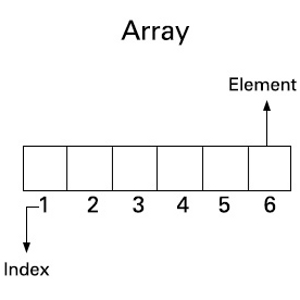

Instanced vs Static
Instanced
To instantiate an object means to create it. That object holds information, and you can ask each object for the information they hold. So pull up a chair –– or instantiate one –– and lets talk about objects.
Why it's important
If we didn't have objects that managed themselves, we would have to manage them from a higher position. We would need to search for those objects, then perform the logic required of them. The extra work put in to do the searching, especially in a frame-by-frame setting such as a game, is too much for a computer to handle.
I made this mistake when I first designed the time reversal for our game. The information was recorded into a giant static array that held information about every object. For some reason at the time, I thought that we should keep all the data together in the same place. Accessing a large array wasn't hindering the computation in any way either; indexing is O(1). But the problems came from times where we needed to create objects –– such as projectiles –– during recording. The giant array won't know that the new projectile object exists. The first workaround was to create a function that would search for new objects not existing inside the giant array, but that didn't really solve the problem. In hindsight, it was a very poor design by me.

Enter the power of objects
If two objects are under the same class, they'll be able to store similar data. That's how this problem should be solved, and quite frankly, that problem shouldn't have existed in the first place. I scrapped the giant static array and had each object keep its own array of information. That way, I wouldn't need to do any searching. The problem of adding objects is also solved; the new object will automatically have its own data, which we can manage upon creation.
Static
To a lot of beginning programmers, I've heard people blindly say 'never use static'. It's true that static anything has very limited use (since it cant be copied), and that it goes against the concepts of object-oriented programming. But it exists for a reason, and there are a lot of very good applications for it.
protected static int index;
For our game, we record an object by storing relevant information frame-by-frame into a data structure. When we play it back, we need to read from the structure using an index. It wouldn't make sense for each object to hold an index of the same number. So we make that index variable static so that it's accessible by all objects classified under it.